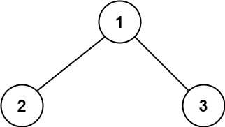
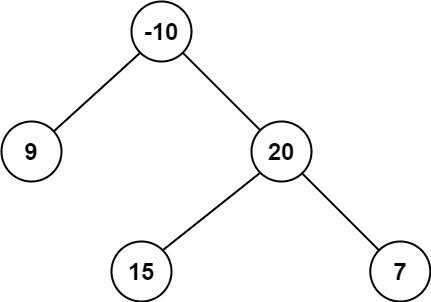

124. 二叉树中的最大路径和
后序递归返回向下的单边最大贡献（负数按 0）；经过当前结点的路径和 = 左 + 自己 + 右，全局取最大。
思路
gain(node)返回从node出发、只往下走的最大路径和；左右贡献取Math.max(0, …)，为负就不走那边。- 路径在
node处拐弯：路径和 =left + node.val + right，用它更新全局best，每个结点算一次。 - 返回给父结点只能带一边：
node.val + Math.max(left, right)，路径不能分叉。 best初值取Integer.MIN_VALUE：结点全是负数时，答案也是负的。
图解
最优解
1class Solution {2 private int best;3 4 public int maxPathSum(TreeNode root) {5 best = Integer.MIN_VALUE;6 gain(root);7 return best;8 }9 10 // 返回从 node 出发、只往下走的最大路径和11 private int gain(TreeNode node) {12 if (node == null) return 0;13 // 贡献为负就不走那一边，按 0 算14 int left = Math.max(0, gain(node.left));15 int right = Math.max(0, gain(node.right));16 // 路径在 node 处拐弯：左右两边都能用17 best = Math.max(best, left + node.val + right);18 // 往上只能带一边，路径不能分叉19 return node.val + Math.max(left, right);20 }21}题目
二叉树中的 路径 被定义为一条节点序列，序列中每对相邻节点之间都存在一条边。同一个节点在一条路径序列中 至多出现一次 。该路径 至少包含一个 节点，且不一定经过根节点。
路径和 是路径中各节点值的总和。
给你一个二叉树的根节点 root ，返回其 最大路径和 。
示例 1：

输入：root = [1,2,3] 输出：6 解释：最优路径是 2 -> 1 -> 3 ，路径和为 2 + 1 + 3 = 6
示例 2：

输入：root = [-10,9,20,null,null,15,7] 输出：42 解释：最优路径是 15 -> 20 -> 7 ，路径和为 15 + 20 + 7 = 42
提示：
- 树中节点数目范围是
[1, 3 * 104] -1000 <= Node.val <= 1000
题面取自力扣当前版本。
数据快照 2026-11-04。题面版权归力扣所有，本站点仅供本人学习使用，请勿对外发布。